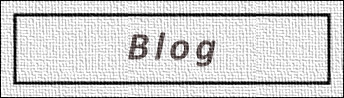
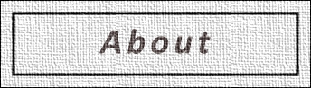

<div>
  
  <p></p>
  <a href="/consulting" target="_blank"> <!-- this will eventually link to "consulting" -->
    
  </a>
  <br>
  <a href="/blog">
    
  </a>
  <br>
  <a href="/portfolio">
    
  </a>
  <br>
  <a href="/about">
    
  </a>
  <br>
  <a href="/contact">
    
  </a>
  <div></div>
</div>


<!-- The code below is the default for when the blog posts appear on the site landing page -->

<!--
{% for post in paginator.posts %}
<div class="post-preview">
    <a href="{{ post.url | prepend: site.baseurl }}">
        <h2 class="post-title">            {{ post.title }}
        </h2>
        {% if post.subtitle %}
        <h3 class="post-subtitle">
            {{ post.subtitle }}
        </h3>
        {% endif %}
    </a>
    {{ post.excerpt }}
    <p class="post-meta">Posted by {% if site.author %}{{ site.author }}{% else %}{{ site.github_username }}{% endif %} on {{ post.date | date: "%B %-d, %Y" }}</p>
</div>
<hr>
{% endfor %}

<!-- Pager -->

<!--
{% if paginator.total_pages > 1 %}
<ul class="pager">
    {% if paginator.previous_page %}
    <li class="previous">
        <a href="{{ paginator.previous_page_path | prepend: site.baseurl | replace: '//', '/' }}">&larr; Newer Posts</a>
    </li>
    {% endif %}
    {% if paginator.next_page %}
    <li class="next">
        <a href="{{ paginator.next_page_path | prepend: site.baseurl | replace: '//', '/' }}">Older Posts &rarr;</a>
    </li>
    {% endif %}
</ul>
{% endif %}
-->
